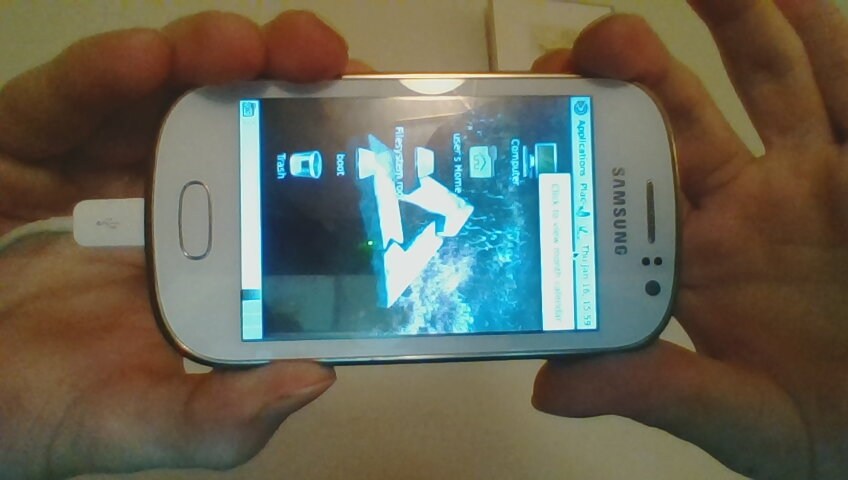

Samsung Galaxy Fame (samsung-nevisp)
Jump to navigation
Jump to search
|
 Samsung Galaxy Fame (nevisp) running mate | |
| Manufacturer | Samsung |
|---|---|
| Name | Galaxy Fame |
| Codename | samsung-nevisp |
| Released | 2013 |
| Category | testing |
| Original software | Android |
| Original version | 4.1.2 |
| postmarketOS kernel | 3.0.101 |
| Hardware | |
| Chipset | Broadcom BCM21654G |
| CPU | 1.0 GHz Cortex-A9 |
| GPU | Broadcom VideoCore IV |
| Display | 320x480 |
| Storage | 4 GB |
| Memory | 512 MB |
| Architecture | armv7 |
{kind=link}
| USB Networking |
Works
|
|---|---|
| Flashing |
Works
|
| Touchscreen |
Works
|
| Display |
Works
|
| WiFi |
Works
|
| FDE |
Works
|
| Mainline |
Broken
|
| Battery | |
| 3D Acceleration |
Broken
|
| Audio |
Works
|
| Bluetooth | |
| Camera |
Broken
|
| GPS | |
| Mobile data | |
| SMS | |
| Calls | |
| USB OTG | |
| NFC | |
| Accelerometer | |
|---|---|
| Magnetometer | |
| Ambient Light | |
| Proximity | |
| Hall Effect | |
| Barometer | |
| Power Sensor | |
| Camera Flash | |
|---|---|
| Keyboard | |
| Touchpad | |
| USB-A | |
| HDMI/DP | |
| Ir TX | |
| Ir RX | |
| Stylus | |
| Haptics | |
| Ethernet | |
| FOSS bootloader | |
Contributors
- fsmnarmosta
Maintainer(s)
fsmnarmosta
Users owning this device
How to enter flash mode
Upon reboot, press home and volume down.
Installation
Using the pmbootstrap flasher
pmbootstrap flasher flash_kernel
pmbootstrap flasher flash_rootfs
Alternatively, use
pmbootstrap flasher flash_rootfs --partition userdata
to flash the filesystem / to the larger userdata partition (eg. sxmo won't fit into the system partition)
User interfaces
The most usable seems to be sxmo right now. By default, it has cumbersome font settings (and a somewhat incorrect positioning of the xdm login screen). The first can be solved by tweaking the variables dmenu.font, dwm.font, st.font and svkbd.font in the file ~/.Xresources. These values were fairly usable:
dmenu.font: FiraMono Nerd Font:size=5
dwm.font: FiraMono Nerd Font:size=5
st.font: FiraMono Nerd Font:size=5
svkbd.font: Sans:bold:size=5To position the xdm login dialog, look at the file /etc/X11/xdm/Xresources. It should contain a line of the form
xlogin*geometry: <width>x<height>+<x>+<y>The following values seem to have worked fairly well:
xlogin*geometry: 320x300+0+0
See also
- pmaports!954 Initial merge request
- pmaports!995 Wifi support
- Device package
- Kernel package